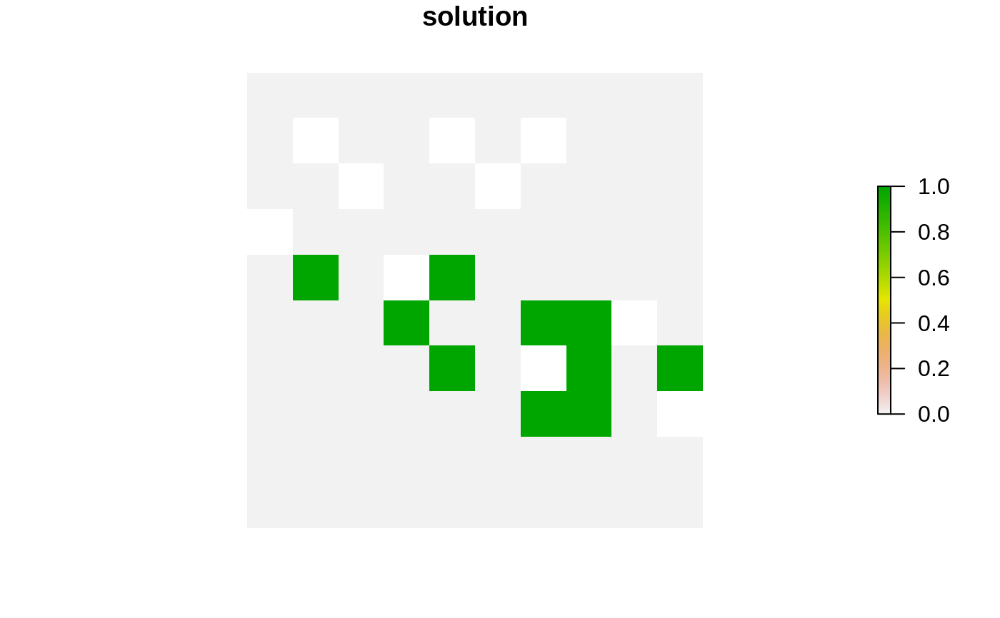
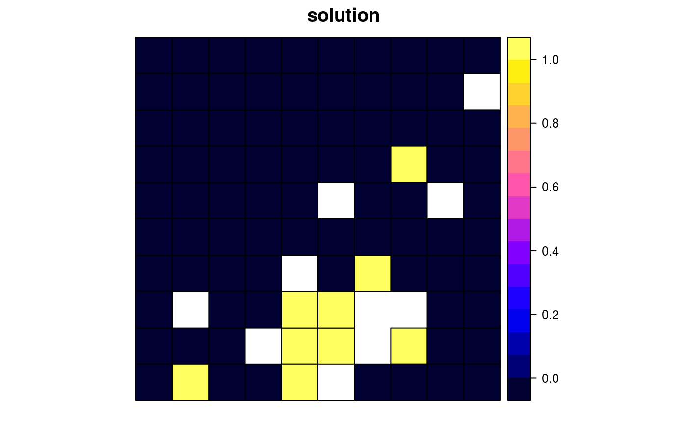
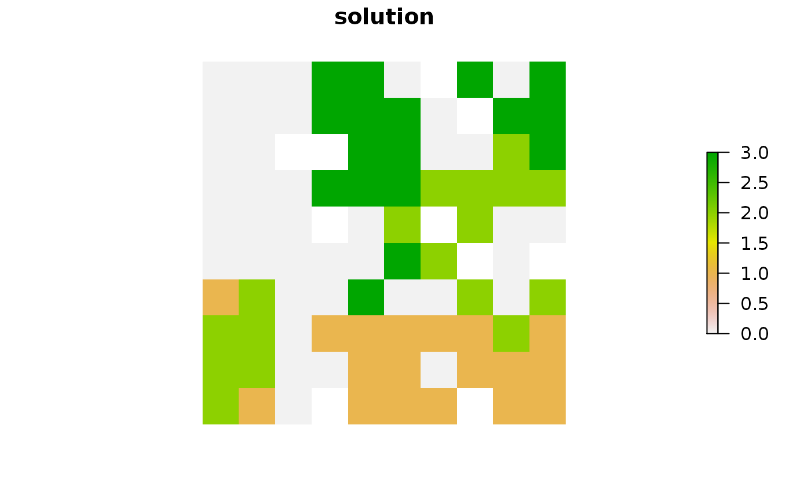
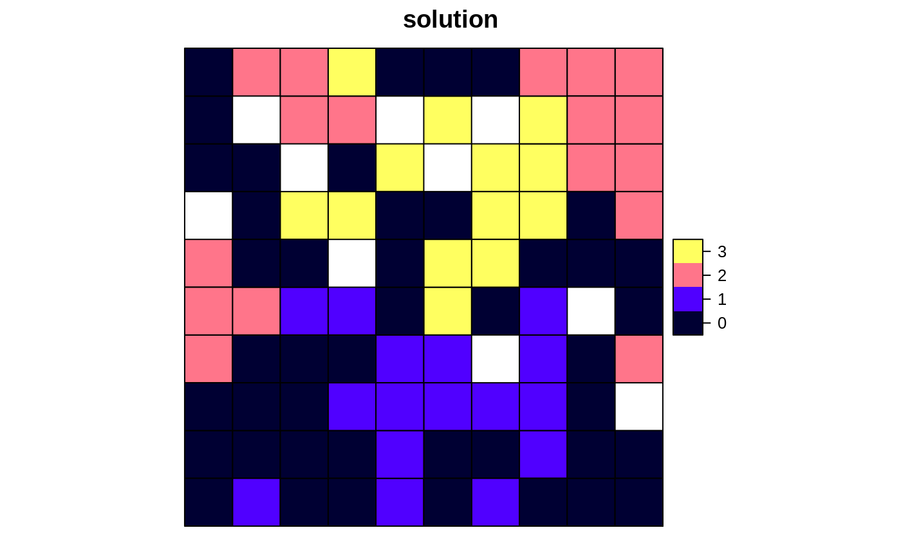

Calculate how well features are represented in a solution.
feature_representation(x, solution) # S4 method for ConservationProblem,numeric feature_representation(x, solution) # S4 method for ConservationProblem,matrix feature_representation(x, solution) # S4 method for ConservationProblem,data.frame feature_representation(x, solution) # S4 method for ConservationProblem,Spatial feature_representation(x, solution) # S4 method for ConservationProblem,sf feature_representation(x, solution) # S4 method for ConservationProblem,Raster feature_representation(x, solution)
| x |
|
|---|---|
| solution |
|
tibble::tibble() object containing the amount
("absolute_held") and proportion ("relative_held")
of the distribution of each feature held in the solution. Here, each
row contains data that pertain to a specific feature in a specific
management zone (if multiple zones are present). This object
contains the following columns:
character name of the feature.
character name of the zone (not included when the
argument to x contains only one management zone).
numeric total amount of each feature secured in
the solution. If the problem contains multiple zones, then this
column shows how well each feature is represented in a each
zone.
numeric proportion of the feature's
distribution held in the solution. If the problem contains
multiple zones, then this column shows how well each feature is
represented in each zone.
Note that all arguments to solution must correspond to the
planning unit data in the argument to x in terms of data
representation, dimensionality, and spatial attributes (if applicable).
This means that if the planning unit data in x is a numeric
vector then the argument to solution must be a numeric vector
with the same number of elements, if the planning unit data in x is
a RasterLayer then the argument to
solution must also be a RasterLayer with
the same number of rows and columns and the same resolution, extent, and
coordinate reference system, if the planning unit data in x is a
Spatial or sf::sf() object then the
argument to solution must also be a Spatial
or sf::sf() object, respectively, and have the same number of
spatial features (e.g. polygons) and have the same coordinate reference
system, if the planning units in x are a data.frame then the
argument to solution must also be a data.frame with each
column correspond to a different zone and each row correspond to a
different planning unit, and values correspond to the allocations (e.g.
values of zero or one).
Solutions must have planning unit statuses set to missing (NA)
values for planning units that have missing (NA) cost data. For
problems with multiple zones, this means that planning units must have
missing (NA) allocation values in zones where they have missing
(NA) cost data. In other words, planning units that have missing
(NA) cost values in x should always have a missing
(NA) value the argument to solution. If an argument is
supplied to
solution where this is not the case, then an error will be thrown.
Additionally, note that when calculating the proportion of each feature
represented in the solution, the denominator is calculated using all
planning units---including any planning units with NA cost
values in the argument to x. This is exactly the same equation
used when calculating relative targets for problems (e.g.
add_relative_targets).
# set seed for reproducibility set.seed(500) # load data data(sim_pu_raster, sim_pu_polygons, sim_pu_zones_sf, sim_features, sim_pu_zones_stack, sim_features_zones) # create a simple conservation planning dataset so we can see exactly # how feature representation is calculated pu <- data.frame(id = seq_len(10), cost = c(0.2, NA, runif(8)), spp1 = runif(10), spp2 = c(rpois(9, 4), NA)) # create problem p1 <- problem(pu, c("spp1", "spp2"), cost_column = "cost") %>% add_min_set_objective() %>% add_relative_targets(0.1) %>% add_binary_decisions() # create a solution s1 <- data.frame(solution = c(1, NA, rep(c(1, 0), 4))) print(s1)#> solution #> 1 1 #> 2 NA #> 3 1 #> 4 0 #> 5 1 #> 6 0 #> 7 1 #> 8 0 #> 9 1 #> 10 0#> # A tibble: 2 x 3 #> feature absolute_held relative_held #> <chr> <dbl> <dbl> #> 1 spp1 3.12 0.541 #> 2 spp2 14 0.424# verify that feature representation calculations are correct all.equal(r1$absolute_held, c(sum(pu$spp1 * s1[[1]], na.rm = TRUE), sum(pu$spp2 * s1[[1]], na.rm = TRUE)))#> [1] TRUEall.equal(r1$relative_held, c(sum(pu$spp1 * s1[[1]], na.rm = TRUE) / sum(pu$spp1), sum(pu$spp2 * s1[[1]], na.rm = TRUE) / sum(pu$spp2, na.rm = TRUE)))#> [1] TRUE#> Gurobi Optimizer version 9.0.2 build v9.0.2rc0 (linux64) #> Optimize a model with 2 rows, 9 columns and 17 nonzeros #> Model fingerprint: 0xd4d755ee #> Variable types: 0 continuous, 9 integer (9 binary) #> Coefficient statistics: #> Matrix range [2e-01, 6e+00] #> Objective range [2e-01, 1e+00] #> Bounds range [1e+00, 1e+00] #> RHS range [6e-01, 3e+00] #> Found heuristic solution: objective 1.4376479 #> Presolve removed 2 rows and 9 columns #> Presolve time: 0.00s #> Presolve: All rows and columns removed #> #> Explored 0 nodes (0 simplex iterations) in 0.00 seconds #> Thread count was 1 (of 4 available processors) #> #> Solution count 2: 0.2 #> #> Optimal solution found (tolerance 1.00e-01) #> Best objective 2.000000000000e-01, best bound 2.000000000000e-01, gap 0.0000%#> id cost spp1 spp2 solution_1 #> 1 1 0.2000000 0.8288314 4 1 #> 2 2 NA 0.7115770 3 NA #> 3 3 0.8336000 0.2820609 1 0 #> 4 4 0.7250118 0.8928427 6 0 #> 5 5 0.9753142 0.7647062 1 0 #> 6 6 0.4676038 0.1643470 4 0 #> 7 7 0.8122781 0.7320744 3 0 #> 8 8 0.2056958 0.2531062 6 0 #> 9 9 0.5121819 0.5083795 5 0 #> 10 10 0.9254660 0.6178138 NA 0# calculate feature representation in this solution r1_2 <- feature_representation(p1, s1_2[, "solution_1", drop = FALSE]) print(r1_2)#> # A tibble: 2 x 3 #> feature absolute_held relative_held #> <chr> <dbl> <dbl> #> 1 spp1 0.829 0.144 #> 2 spp2 4 0.121# build minimal conservation problem with raster data p2 <- problem(sim_pu_raster, sim_features) %>% add_min_set_objective() %>% add_relative_targets(0.1) %>% add_binary_decisions() # solve the problem s2 <- solve(p2)#> Gurobi Optimizer version 9.0.2 build v9.0.2rc0 (linux64) #> Optimize a model with 5 rows, 90 columns and 450 nonzeros #> Model fingerprint: 0x6442bf6e #> Variable types: 0 continuous, 90 integer (90 binary) #> Coefficient statistics: #> Matrix range [2e-01, 9e-01] #> Objective range [2e+02, 2e+02] #> Bounds range [1e+00, 1e+00] #> RHS range [3e+00, 8e+00] #> Found heuristic solution: objective 2337.9617505 #> Presolve time: 0.00s #> Presolved: 5 rows, 90 columns, 450 nonzeros #> Variable types: 0 continuous, 90 integer (90 binary) #> Presolved: 5 rows, 90 columns, 450 nonzeros #> #> #> Root relaxation: objective 1.931582e+03, 12 iterations, 0.00 seconds #> #> Nodes | Current Node | Objective Bounds | Work #> Expl Unexpl | Obj Depth IntInf | Incumbent BestBd Gap | It/Node Time #> #> 0 0 1931.58191 0 4 2337.96175 1931.58191 17.4% - 0s #> H 0 0 1987.3985265 1931.58191 2.81% - 0s #> #> Explored 1 nodes (12 simplex iterations) in 0.00 seconds #> Thread count was 1 (of 4 available processors) #> #> Solution count 2: 1987.4 2337.96 #> #> Optimal solution found (tolerance 1.00e-01) #> Best objective 1.987398526526e+03, best bound 1.931581908865e+03, gap 2.8085%#> class : RasterLayer #> dimensions : 10, 10, 100 (nrow, ncol, ncell) #> resolution : 0.1, 0.1 (x, y) #> extent : 0, 1, 0, 1 (xmin, xmax, ymin, ymax) #> crs : NA #> source : memory #> names : layer #> values : 0, 1 (min, max) #>#> # A tibble: 5 x 3 #> feature absolute_held relative_held #> <chr> <dbl> <dbl> #> 1 layer.1 8.91 0.107 #> 2 layer.2 3.13 0.100 #> 3 layer.3 7.34 0.102 #> 4 layer.4 4.35 0.102 #> 5 layer.5 6.01 0.106# } # build minimal conservation problem with polygon (Spatial) data p3 <- problem(sim_pu_polygons, sim_features, cost_column = "cost") %>% add_min_set_objective() %>% add_relative_targets(0.1) %>% add_binary_decisions() # \dontrun{ # solve the problem s3 <- solve(p3)#> Gurobi Optimizer version 9.0.2 build v9.0.2rc0 (linux64) #> Optimize a model with 5 rows, 90 columns and 450 nonzeros #> Model fingerprint: 0xa41351c6 #> Variable types: 0 continuous, 90 integer (90 binary) #> Coefficient statistics: #> Matrix range [2e-01, 9e-01] #> Objective range [2e+02, 2e+02] #> Bounds range [1e+00, 1e+00] #> RHS range [3e+00, 7e+00] #> Found heuristic solution: objective 2145.2678910 #> Presolve time: 0.00s #> Presolved: 5 rows, 90 columns, 450 nonzeros #> Variable types: 0 continuous, 90 integer (90 binary) #> Presolved: 5 rows, 90 columns, 450 nonzeros #> #> #> Root relaxation: objective 1.732564e+03, 12 iterations, 0.00 seconds #> #> Nodes | Current Node | Objective Bounds | Work #> Expl Unexpl | Obj Depth IntInf | Incumbent BestBd Gap | It/Node Time #> #> 0 0 1732.56396 0 4 2145.26789 1732.56396 19.2% - 0s #> H 0 0 1792.5345202 1732.56396 3.35% - 0s #> #> Explored 1 nodes (12 simplex iterations) in 0.00 seconds #> Thread count was 1 (of 4 available processors) #> #> Solution count 2: 1792.53 2145.27 #> #> Optimal solution found (tolerance 1.00e-01) #> Best objective 1.792534520218e+03, best bound 1.732563961206e+03, gap 3.3456%#> cost locked_in locked_out solution_1 #> 1 215.8638 FALSE FALSE 0 #> 2 212.7823 FALSE FALSE 0 #> 3 207.4962 FALSE FALSE 0 #> 4 208.9322 FALSE TRUE 0 #> 5 214.0419 FALSE FALSE 0 #> 6 213.7636 FALSE FALSE 0# calculate feature representation in the solution r3 <- feature_representation(p3, s3[, "solution_1"]) print(r3)#> # A tibble: 5 x 3 #> feature absolute_held relative_held #> <chr> <dbl> <dbl> #> 1 layer.1 8.05 0.108 #> 2 layer.2 2.83 0.101 #> 3 layer.3 6.65 0.103 #> 4 layer.4 3.87 0.101 #> 5 layer.5 5.41 0.107# plot solution spplot(s3, zcol = "solution_1", main = "solution", axes = FALSE, box = FALSE)# } # build multi-zone conservation problem with raster data p4 <- problem(sim_pu_zones_stack, sim_features_zones) %>% add_min_set_objective() %>% add_relative_targets(matrix(runif(15, 0.1, 0.2), nrow = 5, ncol = 3)) %>% add_binary_decisions() # \dontrun{ # solve the problem s4 <- solve(p4)#> Gurobi Optimizer version 9.0.2 build v9.0.2rc0 (linux64) #> Optimize a model with 105 rows, 270 columns and 1620 nonzeros #> Model fingerprint: 0x68605ba0 #> Variable types: 0 continuous, 270 integer (270 binary) #> Coefficient statistics: #> Matrix range [2e-01, 1e+00] #> Objective range [2e+02, 2e+02] #> Bounds range [1e+00, 1e+00] #> RHS range [1e+00, 2e+01] #> Found heuristic solution: objective 12200.043064 #> Presolve removed 8 rows and 0 columns #> Presolve time: 0.00s #> Presolved: 97 rows, 270 columns, 900 nonzeros #> Variable types: 0 continuous, 270 integer (270 binary) #> Presolved: 97 rows, 270 columns, 900 nonzeros #> #> #> Root relaxation: objective 1.033167e+04, 39 iterations, 0.00 seconds #> #> Nodes | Current Node | Objective Bounds | Work #> Expl Unexpl | Obj Depth IntInf | Incumbent BestBd Gap | It/Node Time #> #> 0 0 10331.6670 0 4 12200.0431 10331.6670 15.3% - 0s #> H 0 0 10667.271164 10331.6670 3.15% - 0s #> #> Explored 1 nodes (39 simplex iterations) in 0.00 seconds #> Thread count was 1 (of 4 available processors) #> #> Solution count 2: 10667.3 12200 #> #> Optimal solution found (tolerance 1.00e-01) #> Best objective 1.066727116441e+04, best bound 1.033166695246e+04, gap 3.1461%#> class : RasterStack #> dimensions : 10, 10, 100, 3 (nrow, ncol, ncell, nlayers) #> resolution : 0.1, 0.1 (x, y) #> extent : 0, 1, 0, 1 (xmin, xmax, ymin, ymax) #> crs : NA #> names : layer.1.1, layer.1.2, layer.1.3 #> min values : 0, 0, 0 #> max values : 1, 1, 1 #>#> # A tibble: 15 x 4 #> feature zone absolute_held relative_held #> <chr> <chr> <dbl> <dbl> #> 1 feature_1 zone_1 16.0 0.192 #> 2 feature_2 zone_1 5.13 0.164 #> 3 feature_3 zone_1 13.0 0.181 #> 4 feature_4 zone_1 7.06 0.166 #> 5 feature_5 zone_1 11.2 0.197 #> 6 feature_1 zone_2 14.7 0.177 #> 7 feature_2 zone_2 5.03 0.161 #> 8 feature_3 zone_2 11.7 0.163 #> 9 feature_4 zone_2 8.02 0.188 #> 10 feature_5 zone_2 10.4 0.183 #> 11 feature_1 zone_3 13.0 0.156 #> 12 feature_2 zone_3 6.08 0.195 #> 13 feature_3 zone_3 11.4 0.158 #> 14 feature_4 zone_3 8.33 0.195 #> 15 feature_5 zone_3 8.87 0.156# } # build multi-zone conservation problem with polygon (sf) data p5 <- problem(sim_pu_zones_sf, sim_features_zones, cost_column = c("cost_1", "cost_2", "cost_3")) %>% add_min_set_objective() %>% add_relative_targets(matrix(runif(15, 0.1, 0.2), nrow = 5, ncol = 3)) %>% add_binary_decisions() # \dontrun{ # solve the problem s5 <- solve(p5)#> Gurobi Optimizer version 9.0.2 build v9.0.2rc0 (linux64) #> Optimize a model with 105 rows, 270 columns and 1620 nonzeros #> Model fingerprint: 0xf5ca8602 #> Variable types: 0 continuous, 270 integer (270 binary) #> Coefficient statistics: #> Matrix range [2e-01, 1e+00] #> Objective range [2e+02, 2e+02] #> Bounds range [1e+00, 1e+00] #> RHS range [1e+00, 1e+01] #> Found heuristic solution: objective 10551.252008 #> Presolve removed 7 rows and 0 columns #> Presolve time: 0.00s #> Presolved: 98 rows, 270 columns, 990 nonzeros #> Variable types: 0 continuous, 270 integer (270 binary) #> Presolved: 98 rows, 270 columns, 990 nonzeros #> #> #> Root relaxation: objective 8.973346e+03, 73 iterations, 0.00 seconds #> #> Nodes | Current Node | Objective Bounds | Work #> Expl Unexpl | Obj Depth IntInf | Incumbent BestBd Gap | It/Node Time #> #> 0 0 8973.34608 0 9 10551.2520 8973.34608 15.0% - 0s #> H 0 0 9201.5595283 8973.34608 2.48% - 0s #> #> Explored 1 nodes (73 simplex iterations) in 0.00 seconds #> Thread count was 1 (of 4 available processors) #> #> Solution count 2: 9201.56 10551.3 #> #> Optimal solution found (tolerance 1.00e-01) #> Best objective 9.201559528348e+03, best bound 8.973346077498e+03, gap 2.4802%#> Simple feature collection with 6 features and 9 fields #> geometry type: POLYGON #> dimension: XY #> bbox: xmin: 0 ymin: 0.9 xmax: 0.6 ymax: 1 #> CRS: NA #> cost_1 cost_2 cost_3 locked_1 locked_2 locked_3 solution_1_zone_1 #> 1 215.8638 183.3344 205.4113 FALSE FALSE FALSE 0 #> 2 212.7823 189.4978 209.6404 FALSE FALSE FALSE 0 #> 3 207.4962 193.6007 215.4212 TRUE FALSE FALSE 0 #> 4 208.9322 197.5897 218.5241 FALSE FALSE FALSE 0 #> 5 214.0419 199.8033 220.7100 FALSE FALSE FALSE 0 #> 6 213.7636 203.1867 224.6809 FALSE FALSE FALSE 0 #> solution_1_zone_2 solution_1_zone_3 geometry #> 1 0 0 POLYGON ((0 1, 0.1 1, 0.1 0... #> 2 0 0 POLYGON ((0.1 1, 0.2 1, 0.2... #> 3 0 0 POLYGON ((0.2 1, 0.3 1, 0.3... #> 4 0 0 POLYGON ((0.3 1, 0.4 1, 0.4... #> 5 0 0 POLYGON ((0.4 1, 0.5 1, 0.5... #> 6 0 0 POLYGON ((0.5 1, 0.6 1, 0.6...# calculate feature representation in the solution r5 <- feature_representation(p5, s5[, c("solution_1_zone_1", "solution_1_zone_2", "solution_1_zone_3")]) print(r5)#> # A tibble: 15 x 4 #> feature zone absolute_held relative_held #> <chr> <chr> <dbl> <dbl> #> 1 feature_1 zone_1 14.3 0.190 #> 2 feature_2 zone_1 4.88 0.174 #> 3 feature_3 zone_1 12.2 0.188 #> 4 feature_4 zone_1 6.25 0.164 #> 5 feature_5 zone_1 9.55 0.187 #> 6 feature_1 zone_2 15.0 0.200 #> 7 feature_2 zone_2 4.61 0.165 #> 8 feature_3 zone_2 13.2 0.204 #> 9 feature_4 zone_2 5.65 0.149 #> 10 feature_5 zone_2 10.3 0.200 #> 11 feature_1 zone_3 11.1 0.147 #> 12 feature_2 zone_3 3.89 0.139 #> 13 feature_3 zone_3 8.45 0.130 #> 14 feature_4 zone_3 6.42 0.169 #> 15 feature_5 zone_3 7.96 0.155# create new column representing the zone id that each planning unit # was allocated to in the solution s5$solution <- category_vector(s5[, c("solution_1_zone_1", "solution_1_zone_2", "solution_1_zone_3")]) s5$solution <- factor(s5$solution) # plot solution plot(s5[, "solution"])# }